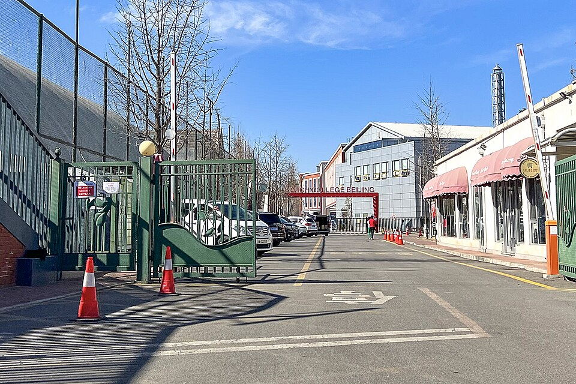

덜위치 칼리지 베이징 정문 · 사진: N509FZ / Wikimedia Commons, CC BY-SA 4.0
덜위치 칼리지 베이징(Dulwich College Beijing) — 같은 "덜위치"인데 도시마다 끝이 다릅니다
1. 어떤 학교인가
· 설립 — 2005년에 세워진 것으로 알려져 있습니다. 영국 런던의 덜위치 칼리지(Dulwich College, 1619년 설립)와 역사적 연결이 있는 덜위치 칼리지 인터내셔널 계열 학교로 안내됩니다.
· 위치 — 베이징 북동쪽 순이구(Shunyi), 캐피털 에어포트 로드 인근의 레전드 가든 캠퍼스로 안내됩니다. 어린 연령대를 위한 별도 캠퍼스도 함께 운영되는 것으로 알려져 있습니다.
· 학년 — 유아 연령부터 고등학교 졸업 학년까지를 받는 구조로 안내됩니다. 연령대별로 캠퍼스가 나뉘어 있어, 몇 살에 어느 캠퍼스로 가는지는 학교에 직접 확인하셔야 합니다.
· 교육과정 — 영국 국가교육과정을 기반으로 중등에서 IGCSE를 거치고, 그 이후 IB 디플로마로 이어지는 형태로 안내되어 왔습니다. 다만 학교별 개설 과정은 시기에 따라 안내가 달라질 수 있으니 올해 요강을 직접 확인하세요.
※ 학비·정원·합격률·재학생 수처럼 해마다 바뀌는 수치는 이 글에서 다루지 않습니다.
2. 핵심 — "덜위치"는 학교 이름이자 계열 이름입니다
이 글에서 꼭 가져가셔야 할 한 가지입니다. 덜위치라는 이름이 붙은 학교는 여러 도시에 있고, 각각 다른 학교로 운영됩니다. 계열이 같다는 건 뿌리와 운영 철학이 이어져 있다는 뜻이지, 모든 도시에서 같은 과정을 가르친다는 뜻이 아닙니다.
실제로 한국 학부모님들이 가장 많이 마주치는 세 곳만 놓고 봐도 마무리 과정이 갈립니다.
| 항목 | 덜위치 베이징 | 덜위치 상하이 | 덜위치칼리지 서울 |
|---|---|---|---|
| 도시 | 베이징 순이구 | 상하이 | 서울 서초 |
| 설립 | 2005년 | 2003년 | 2010년 |
| 시작 방식 | 영국식 | 영국식 | 영국식 |
| 마무리 과정 | IGCSE → IB 디플로마 | IGCSE → IB 디플로마 | IGCSE → A-Level |
| 입학 전 확인 | 중국 등록 자격·캠퍼스 연령 | 중국 등록 자격·황푸강 생활권 | 외국인학교 지원 자격 |
| 자세히 | 이 글 | 덜위치 상하이 가이드 | 덜위치칼리지 서울 가이드 |
※ 개설 과정·캠퍼스 구성은 학교와 연도에 따라 달라질 수 있습니다. 각 학교 요강을 직접 확인하세요.
표의 네 번째 줄이 핵심입니다. 같은 계열인데 서울은 A-Level로, 베이징·상하이는 IB 디플로마로 마무리하는 형태로 안내되어 왔습니다. 그래서 서울 덜위치를 다니다 베이징으로 옮기는 가정은 "같은 학교로 옮기는 것"이 아니라 "중간에 마무리 과정을 바꾸는 것"이 될 수 있습니다. 이 사실을 옮기기 전에 아는지 옮긴 뒤에 아는지가 준비의 차이를 만듭니다.
3. 베이징에서 확인할 것 둘 — 등록 자격과 순이구
① 중국 본토의 국제학교는 "자격"부터입니다
중국 본토의 국제학교 중에는 외국 국적 자녀를 위한 학교라는 별도 범주로 운영되는 곳들이 있습니다. 이 경우 학교가 받고 싶어도 받을 수 없는 학생이 생깁니다. 교육 당국이 정한 등록 자격 안에서만 등록이 가능하기 때문입니다. 즉 학교 홈페이지에서 커리큘럼을 아무리 잘 읽어도, 우리 가족이 그 자격에 해당하는지가 먼저 정리되지 않으면 의미가 없습니다.
자격 구분은 학교마다·연도마다 표현이 다르고 요구 서류도 달라집니다. 그래서 이 글로 판단하지 마시고 입학처에 올해 기준으로 직접 문의하셔야 합니다. 어떤 형태의 구분이 있는지는 상하이 사례를 정리한 SCIS 상하이 — 중국 국제학교는 "자격"부터에 자세히 적어 두었습니다. 베이징도 확인해야 한다는 원칙은 같습니다.
② 순이구라는 생활권이 통학을 정합니다
베이징은 도시가 넓습니다. 학교가 있는 순이구는 공항 방면으로 이어지는 북동쪽 지역이고, 외국인 주재원 거주 단지가 모여 있는 곳으로 알려져 있습니다. 그래서 회사 사택이 순이구 생활권이면 통학이 자연스럽고, 도심 서쪽·남쪽으로 정해지면 매일의 이동이 아이의 저녁을 먹습니다.
거주지를 아직 고를 수 있는 단계라면, 학교를 먼저 정하고 집을 그 생활권에 맞추는 순서가 가능합니다. 이미 정해졌다면 통학 버스 노선과 실제 소요 시간을 학교에 확인한 뒤 판단하세요. 베이징의 다른 선택지로는 IB 전 과정을 운영하는 웨스턴 아카데미 오브 베이징(WAB)이 있습니다.
4. 한국(주재원) 학생·학부모가 겪는 어려움
· 중간에 규칙이 바뀐다. 영국식으로 시작해 IB로 끝나는 학교는 Year 11까지의 공부법과 그 이후의 공부법이 다릅니다. IGCSE 구간은 과목별 시험 성격이 강하고, IB 디플로마 구간은 내부 과제(IA)와 에세이의 비중이 커집니다. 잘하던 아이가 G11에서 갑자기 흔들리는 이유가 대개 여기에 있습니다. → IGCSE 과목 선택 · IB DP 점수 완전정복
· 계열 이름을 보고 안심한다. 앞에서 본 대로 도시마다 마무리가 다릅니다. 지금 학교의 안내문만이 우리 아이에게 적용됩니다.
· Year와 Grade가 섞여 헷갈린다. 영국식 학년(Year)과 미국식 학년(Grade)이 자료에 섞여 나옵니다. 학년이 내려간 것이 아니라 세는 방식이 다른 것입니다. → 국제학교 학년 체계 총정리
· 생활 영어는 느는데 교과 영어가 안 는다. 회화가 빨리 늘어 부모님은 안심하시는데, 점수는 교과를 읽고 설명하는 영어에서 갈립니다. → EAL(영어 지원 프로그램) · Learning Support
· 수학은 계산이 아니라 용어와 서술에서 막힌다. 한국에서 이미 배운 내용인데 알지브라·지오메트리 용어가 영어라서 못 푸는 경우가 흔합니다. 답만 적으면 과정 점수를 받지 못합니다.
· 성적이 어떻게 가는지 안 보인다. 학교 플랫폼에 들어가 보셔도 무엇을 냈는가는 보이는데 왜 그 점수인가는 안 보입니다. → 학습 플랫폼·시간표 읽는 법 · 성적표 읽는 법 · 형성평가·총괄평가 구분
5. 그래서 이렇게 준비합니다
🧭 먼저 — 아이가 "어느 구간"에 있는지부터 적는다
영국식으로 시작해 IB로 끝나는 학교에서는 구간마다 점수를 가르는 것이 다릅니다. 종이에 한 줄만 적어 보세요. "우리 아이는 지금 초등 / IGCSE 준비 / IGCSE / IB 디플로마 중 어디인가." 이 한 줄이 정해지면 무엇부터 손볼지가 바로 정해집니다.
· 초등 구간 — 읽기 수준과 영어로 쓰인 수학 용어. 여기서 벌어 두면 뒤가 편합니다.
· IGCSE 구간 — 지시어(describe·explain·evaluate)에 맞춰 답의 형태를 바꾸는 연습, 그리고 과정을 적는 수학.
· IB 디플로마 구간 — IA 같은 장기 과제의 기한 관리와 구조. 점수가 한 번에 몰려 있어 한 번 놓치면 회복이 어렵습니다.
📖 영어과외 — 에세이는 "구조"부터
IB로 이어지는 학교에서 영어는 글의 구조가 점수를 정합니다. 주장·근거·해석이 한 문단 안에서 어떤 순서로 놓이는지를 익히는 훈련을 먼저 합니다. 내용이 있어도 구조가 없으면 채점 기준표의 상위 칸에 닿지 못합니다. (영어 공부법 참고)
📐 수학과외 — 용어를 붙이고, 과정을 문장으로
아이가 이미 아는 개념에 영어 용어를 다시 붙여 주는 작업부터 합니다. 그다음 풀이 과정을 영어 문장으로 적는 습관을 들입니다. IB 수학은 AA와 AI로 갈리므로, 고등 진입 전에 어느 쪽이 맞는지도 함께 봅니다. (알지브라 공부법 · IB 수학 AA·AI 참고)
📅 편입이라면 — 학기 시작 전에 한 과목이라도 앞세운다
중간에 옮겨 오는 학생은 진도의 공백보다 평가 방식의 공백에서 더 고생합니다. 가능하면 합류 전 한 달에 그 학교가 쓰는 채점 기준을 미리 한 번 보고 들어가는 편이 좋습니다. → 편입·전학 총정리 · 오픈데이·학교 방문 준비법
6. 베이징의 강점 — 시차 한 시간의 화상과외
베이징은 한국보다 한 시간 느립니다. 베이징 오후 4시가 한국 오후 5시라, 아이의 방과 후 시간이 한국 강사진의 수업 시간과 거의 그대로 맞습니다. 순이구처럼 도심에서 떨어진 생활권일수록 이 장점이 커집니다. 수업을 위해 다시 도심으로 나갈 필요가 없기 때문입니다. 아이의 실제 과제와 학교가 준 채점 기준을 화면에 놓고 "어느 항목에서 깎였는지"부터 확인하는 방식이 가장 빠릅니다. 중국 내 다른 도시 사정은 상하이 국제학교 과외와 상하이 수학학원·영어학원 찾기에 정리해 두었습니다.
정리
덜위치 칼리지 베이징은 2005년 순이구 개교로 알려진 영국계 학교이고, IGCSE를 거쳐 IB 디플로마로 이어지는 형태로 안내되어 왔습니다. 그런데 같은 이름의 학교가 서울에서는 A-Level로 끝납니다. 그러니 이 학교를 보실 때 질문은 셋으로 좁혀집니다. "우리 가족이 등록 자격에 해당하는가." "순이구 생활권에서 통학이 가능한가." 그리고 "아이가 마지막 2년을 IB 방식으로 공부하는 편이 맞는가." 이 셋이 정해지면 나머지는 준비의 문제입니다. 30분 무료 상담으로 우리 아이가 지금 어느 구간에 있는지부터 함께 짚어 보세요.